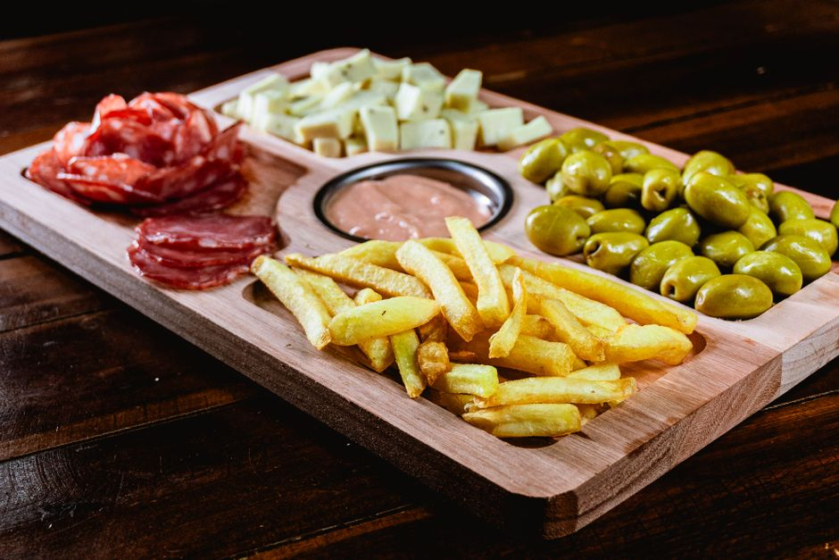
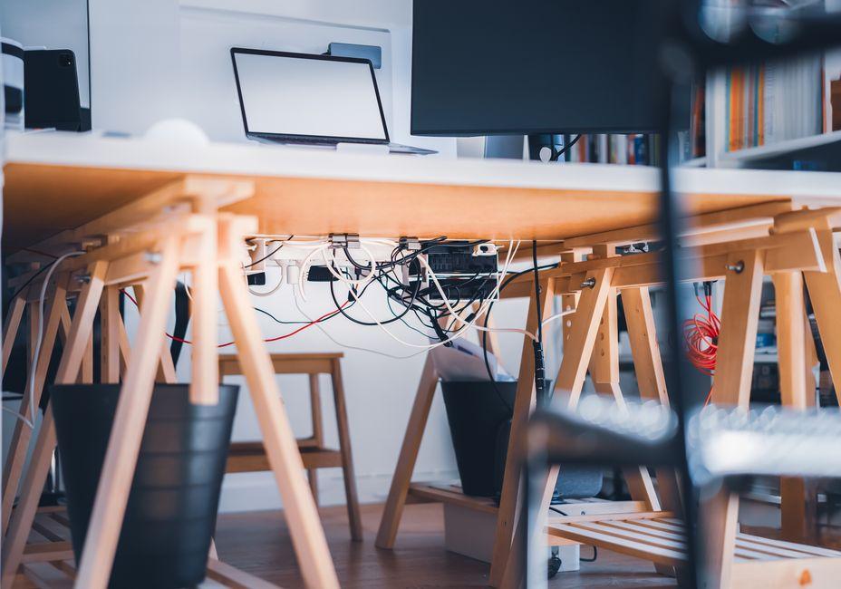
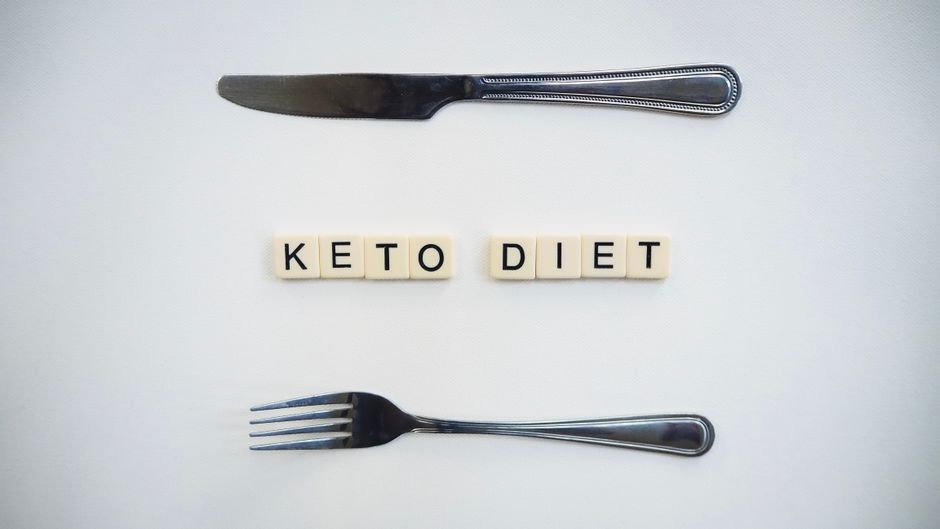

Libro de nutrición deportiva y ganancia muscular para atletas
Guías científicas de nutrición deportiva para optimizar tu alimentación y ganar masa muscular. Estrategias reales basadas en principios nutricionales comprobados.
0 vistas
Soporte ajustable para portátil de aluminio
Soporte ajustable para portátil en aluminio. Eleva tu laptop a la altura ideal para mayor comodidad. Base estable y resistente. ¡Descubre nuestros modelos!
0 vistas

Botella térmica de acero inoxidable de 750ml
Botella térmica de 750ml en acero inoxidable. Mantén tus bebidas calientes o frías durante horas. Perfecta para trabajo, deporte y viajes. Compra ahora.
0 vistas

Tabla de composición nutricional de alimentos en lámina plastificada para cocina
Tabla de composición nutricional plastificada para tu cocina. Consulta calorías y nutrientes de alimentos de forma rápida y práctica. ¡Compra la tuya!
0 vistas
Rodillo de espuma para masaje muscular
Rodillos de espuma para masaje y recuperación muscular en casa. Alivia tensión después del entrenamiento. Herramienta efectiva de auto-masaje.
0 vistas

Organizador de cables magnético para escritorio
Soluciona el caos de cables con nuestro organizador magnético. Mantén tus cables ordenados, accesibles y seguros. Ideal para trabajo remoto y múltiples dispositivos.
0 vistas

Libro de recetas de dieta cetogénica para principiantes
Guía completa de recetas cetogénicas fáciles para principiantes. Platos sabrosos, ingredientes accesibles y explicaciones claras. ¡Comienza hoy!
0 vistas